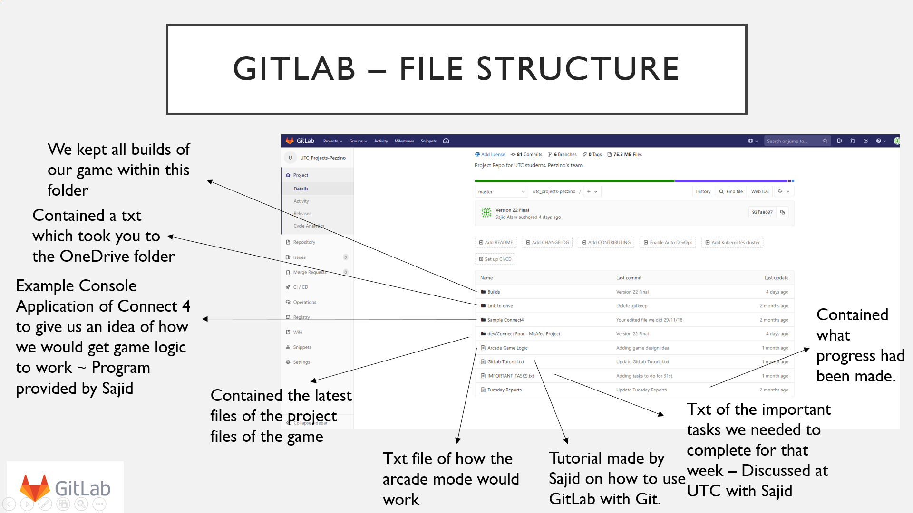

Overview
During my placement the McAfee outreach team reached out to me and asked to be a part of their School Coding Project. This is an annual project where every year the interns at McAfee are assigned a group of four Year 12 students from Buckinghamshire University Technical College (Bucks UTC). The project was a competition between each intern and their groups to see who could create a working video game while following sound software engineering principles. The roles of us interns were, to mentor the students and ensure they were keeping up with the work. The project lasted from October 2018 to February 2019 and involved us interns travelling once a week to Bucks UTC for 60 to 90 minutes to mentor our groups. The students had to present their final product at the end of February with a 15-minute presentation. The presentation was held at McAfee’s conference room in front of a panel of judges, interns, and their peers. Ultimately my group ended up winning the competition for having a fully functioning game with little to no defects and for adhering to the Software Engineering principles I guided them with.
Here is a short demo of all the games modes and features:
As a mentor one of my main tasks was to do weekly visits to my group. Within the first week I introduced myself to the team and got to know a little about them all. One of my first tasks was to set up a small scrum framework (an agile framework for managing knowledge and tasks in software development) within my group. I acted as their scrum master by setting the deadlines and tasks that needed to be completed during this project. I also organised a vote of who would be their project leader. Being part of a scrum framework meant that I helped my group understand the strengths and weaknesses between themselves. For example, two of the group members had some previous coding experience while the other had extensive knowledge of creating assets.
My group decided on creating an arcade style Connect 4 game. I discussed with them the game logic and what was feasible with our time. I recommended they create the Connect 4 game with 2 or more power ups and to keep it only as a player versus player game as implementing a good AI would have taken too long. I gave them advice on various programming languages they could write their game in such as C++, Java and C#. They opted to use C# as one of them had experience with the Unity Game Engine which natively supports C#. As I had not learned C# before, another of my tasks involved learning its syntax and how to use the Unity game engine so that I could provide effective feedback to my group.
Additionally, as their mentor I taught them how to use GitLab as a source control tool. I set up their GitLab with directories that emulated real world development such as having a main branch with all the source code, a build folder which stored each version of their product and text files that was filled once a week by the students writing what they done that week and any issues and problems they want me to look at before my next visit.
Snapshot from Students presentation of the GitLab files I setup:
Over the months I helped them with the game logic and coding until we reached the final iteration, Figure 8 shows the final version of their game in Arcade mode. I also helped them practice their presentations and gave them feedback and improvements. On the day of the presentation my group delivered an exemplary showcase of their game and the journey to the final product. We were awarded first place for having created a polished game and for following the Software Engineering principles.